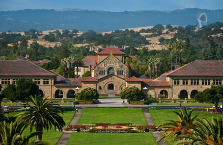

Stanford is a school in Palo Alto, California, about 30 miles away from San Francisco. It was founded in 1885, with a size of 8,180 acres and a sunny, suburban campus setting. Stanford utilizes a quarter-based academic calendar. The school has a 5:1 student-faculty ratio, and 68.8% of the classes have fewer than 20 students. The top five majors at Stanford are social sciences, interdisciplinary studies, engineering, computer science, and biological/biomedical sciences. Stanford has 31 Greek letter organizations, one social Greek letter honor society and four governing Greek councils. Famous alumni include John Elway, Andrew Luck, and Condoleezza Rice.
